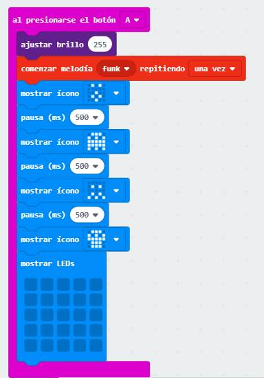

Reto 1 Música
SmartCar tiene incorporado un altavoz ya en el puerto P0 por lo tanto no es necesario hacer cocodrilos o papeles de aluminio como hemos visto anteriormente.
Vamos a hacer un programa que al pulsar el botón A suene música etc...
Descripción del programa
Es simplemente que si presiono el botón A pues que suene y salgan iconos por la pantalla:

Puedes probarlo en este simulador
Y aquí lo tienes para descargar:

MicroBit + SmartCar por Javier Quintana Peiró bajo licencia Creative Commons Reconocimiento-NoComercial-CompartirIgual 4.0 Internacional License.